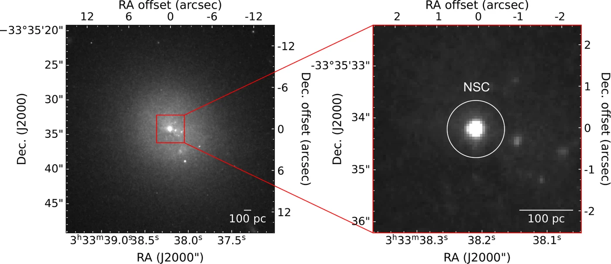
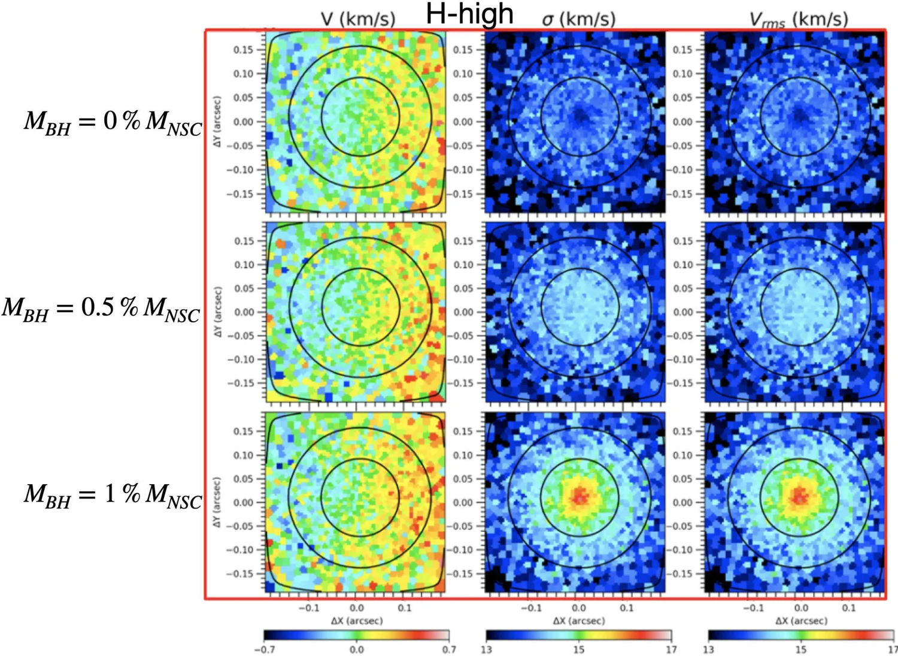
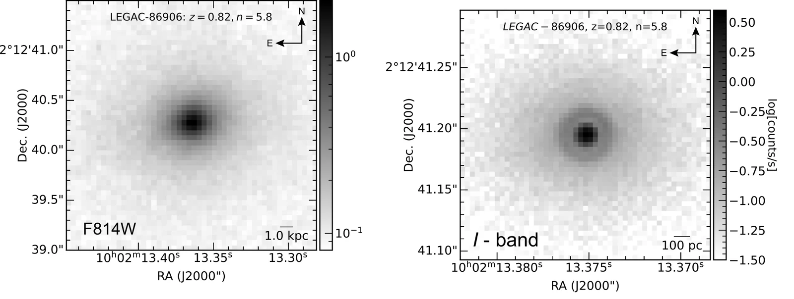
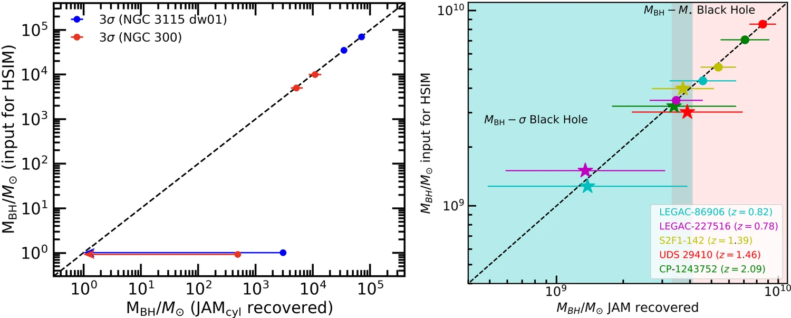

Computational Astrophysics, Simulations, and Modelling
The Extremely Large Telescope (ELT) will be the largest optical telescope ever built. Before it starts observing, I create realistic virtual observations to find out which black holes it will be able to weigh, from small black holes in nearby dwarf galaxies to giant ones in the distant Universe.
Why Simulate a Telescope That Is Not Finished Yet?
The ELT is being built by the European Southern Observatory in the Atacama Desert in Chile. Its main mirror is 39 metres across, and its adaptive optics will correct for the blurring of Earth's atmosphere. Together these will give images far sharper than any telescope today. Two of its first instruments are at the heart of my work:
An integral-field spectrograph. It records a full spectrum at every point of the image, so we can map how fast the stars are moving across the centre of a galaxy.
A high-resolution camera. Its images show precisely how the stars are distributed, which tells us how much of the mass at the centre is in stars.
Time on the world's largest telescopes is extremely competitive, and every hour counts. Simulations let us answer the key questions in advance: which galaxies are worth observing, which instrument settings to use, how long to observe, and, most importantly, whether the black hole mass we measure can be trusted.
How It Works
The idea is simple: we put a black hole of a known mass into a model galaxy, “observe” it with a virtual ELT, and check whether we can get the same mass back out.
-
Start from a real galaxyHubble Space Telescope images tell us how the stars are spread out in the galaxy.HST imaging · MGE
-
Add a black holeWe place a black hole of chosen mass at the centre and compute how the stars should move.JAM dynamical models
-
Observe with a virtual ELTSimulators add realistic blurring, atmosphere, noise and exposure time.HSIM · SimCADO
-
Measure and compareWe analyse the fake data exactly like real data and check whether the mass we recover matches the one we put in.pPXF · JAM + MCMC
What I Have Found
Hidden black holes in dwarf galaxies
Many small galaxies have a dense, bright ball of millions of stars at their very centre, called a nuclear star cluster (Fig. 1). These clusters are among the best places to look for intermediate-mass black holes, the “missing link” between the black holes left behind by single stars and the supermassive giants in large galaxies. They are hard to find because their gravity dominates only a tiny region, too small for today's telescopes to resolve.

In our virtual HARMONI observations, a black hole reveals itself as a “hot spot” at the centre of the map: close to the black hole, stars move faster (Fig. 2). The heavier the black hole, the stronger the signal.

- Very small black holes are within reach. Of 44 dwarf galaxies with nuclear star clusters within about 10 Mpc (33 million light-years), HARMONI can detect black holes weighing as little as about 0.5% of their star cluster (AJ 2025).
- Out to the Fornax Cluster. Even in FCC 119, about 20 Mpc away, HARMONI can detect and weigh black holes above about 100,000 solar masses (Universe 2025) Lead author
- And the Virgo Cluster. In VCC 1861, one of the faintest Virgo galaxies, black holes of about 5% of the cluster mass are detectable (submitted) Lead author
- Sharper images help. Adding MICADO images shows how tightly the stars are packed in the cluster core, and this matters for getting the black hole mass right (Universe 2026).
Giant black holes in the distant Universe
Today, this kind of direct black hole weighing only works for galaxies relatively close to us, within about 100 Mpc. We asked whether the ELT can push it much further, to galaxies at redshift 1–2, whose light left them roughly 8 to 10 billion years ago, when galaxies and their black holes were growing fastest.

- Black hole masses to about 10%. For five massive galaxies at redshift 1–2, combining MICADO images with HARMONI spectra recovers the black hole mass to about 10% accuracy (MNRAS 2026).
- Realistic observing times. MICADO needs about one hour per galaxy, and HARMONI about 5–7.5 hours, depending on the galaxy's brightness.
- A survey plan. I also developed the observing strategy for an ELT survey of the most massive galaxies (proceedings) Lead author
Does it work?
Yes. In both cases, the black hole masses we recover from the virtual observations match the masses we put in: the points in Fig. 4 lie along the dashed one-to-one line. When there is no black hole, the analysis correctly returns only an upper limit.

Tools I Use
I write and run these pipelines mainly in Python, combining community tools for instrument simulation, dynamical modelling and Bayesian fitting.
Papers in This Theme
- Simulating Intermediate-Mass Black Hole Mass Measurements for a Sample of Galaxies with Nuclear Star Clusters using ELT/HARMONINguyen, D. D., Cappellari, M., Ngo, H. N., et al. 2025, AJdoi↗
- Detecting Intermediate-Mass Black Holes out to 20 Mpc with ELT/HARMONI: The Case of FCC 119Ngo, H. N., Nguyen, D. D., et al. 2025, Universe, 11, 360doi↗
- Extending Simulations of Intermediate-Mass Black Hole Mass Measurements to the Virgo Cluster using ELT/HARMONINgo, H. N., Nguyen, D. D., et al., submittedarXiv↗
- Probing the Effect of the Inner Surface-Brightness Profile of Nuclear Star Clusters on IMBH Mass Measurements using Mock ELT/MICADO and HARMONI ObservationsLe, T. Q. T., Nguyen, D. D., Ngo, H. N., et al. 2026, Universe, 12, 160doi↗
- Extending the Frontier of Spatially Resolved SMBH Mass Measurements to 1 < z < 2 with ELT/MICADO and HARMONINguyen, D. D., Cappellari, M., Le, T. Q. T., Ngo, H. N., et al. 2026, MNRAS, 546, 4doi↗
- ELT High Spatial Resolution IFS Survey of Ultramassive Galaxies: Observational Strategy and First Simulated ResultsNgo, H. N., Nguyen, D. D., Cappellari, M., & Pereira-Santaella, M., Windows on the Universe (proceedings)doi↗